Car fan page

Dosta poznati učenik Srednje strukovne škole u Samoboru prošle godine krenuo se baviti sa petim hobijem po redu. Saznajte malo više o mladom programeru koji cilja u nebo!
Na ovo stranici moci cete saznati vise o ladom programeru, riesiti kviz kako biste saznali koliko znate o spomenuom djecaku te kriizirati rad njega i njegove kolegice iz razreda, aka mene. 😝
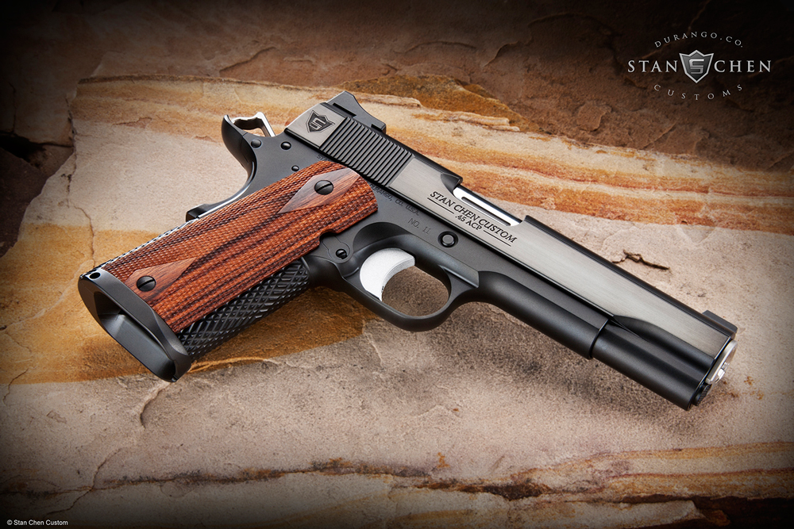 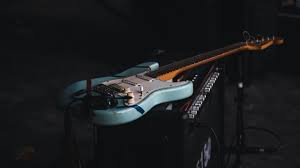 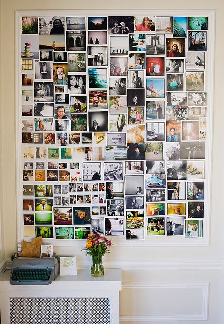Natko Car dolazi iz zapadnog kvarta Zagreba, Gajnice. Rođen 2007. godine 27.4. ne zna ni u kojoj je bolnici rođen ni kada.
Njegovi roditelji Darko i Nataša odgajali su svojega dječaka sa puno ljubavi, razumjevanja i podrške.
Bilo je jasno od ranih godina da je dječak bio nadaren za muziku, ali i za rješavanje problema iz područja matematike.
Profesori kažu da jednostavno ima to nešto što mu olakšava razumjevanje logike kada dođe do područja računalstva i matematike.
Zato je u srednjoj školi sudjelovao na dva školska najecanja iz matematike i informatike, te obadva puta oitšao na županijsko iz informatike, a iz matematike jednom.
Osim uspjeha na natjecanjima, Natko je uspio zadiviti sve svoje profesore svojim radovima na satu vec u prvih par mjeseci prvoga razreda srednje škole u 2022. godini.
Paralelno sa obavezama škole balansirao je i glazbenu školu, u koju je krenuo u 3. razredu osnovne, do 2. razreda srednje.
U glazbenoj je naučio svirati violinu i klavir, a sam je sebe naučio svirati gitaru i bass.
Naravno osim uspjeha u svim tim područjima, Natko je jako prijateljski nastrojen te ga njegovo drušvo i profesori opisuju kao vrlo inovativna, pametna, društvena i vesela osoba.
Nakon što se ispisao iz glazbene škole i popustio u školi razvio je novu zanimaciju te našao sreljaštvo što je postala njegova nova opsesija.
Više o njegovim rezultatima na najecanjima, muzici, izlascima i putovanjima s društvom saznajte na našim podstranicama linkanim pomoću slika na vrhu stranice.
Nemojte zaboraviti riješiti kviz kako biste vidjeli koliko poznajete Natka!
Osim nekih osnovnih stvari na stranici ćete naći neke smješne quotove, slike i priče iz Natkovog života, uživajte!
Smješne stvari koje je Natko rekao
"NE, nećeš mi stisnut prišt sa je*enim lemom"
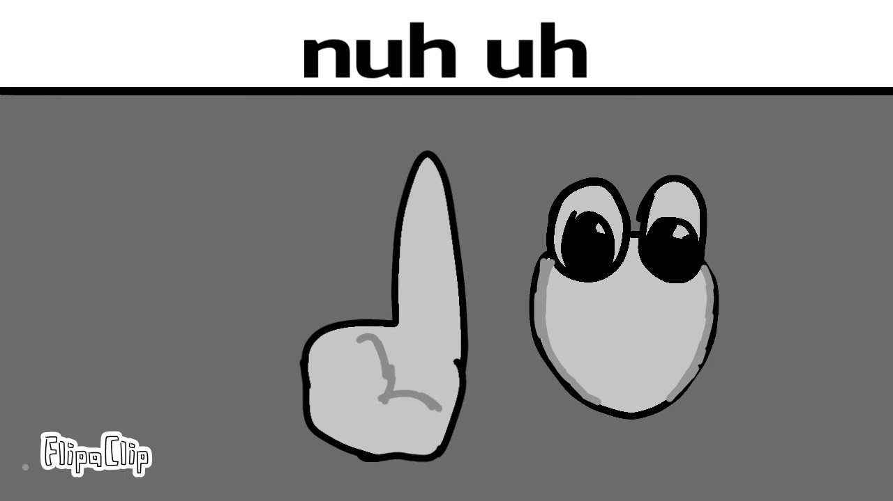"Ima jako grlo što da ti kažem"
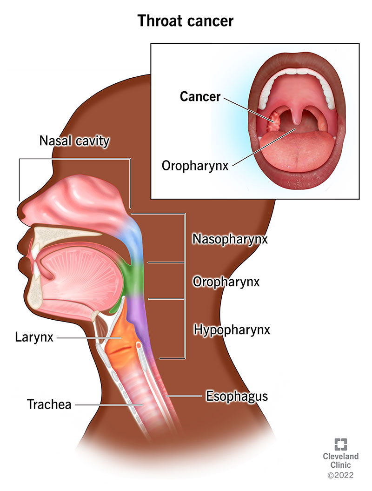"Vukovička koristi tinder za djecu?!"
"I dalje ima kosu, znači nije još bio žrtva mog Super Dicka™"
"Sad kad ti pošalje neku kobasu od zadatka da si ga mozes zagurat kroz šu*ak do grla"
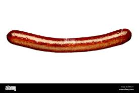"E Dora vibrira mi gu*ica od toga"
Smješne stvari koje je Natko napravio
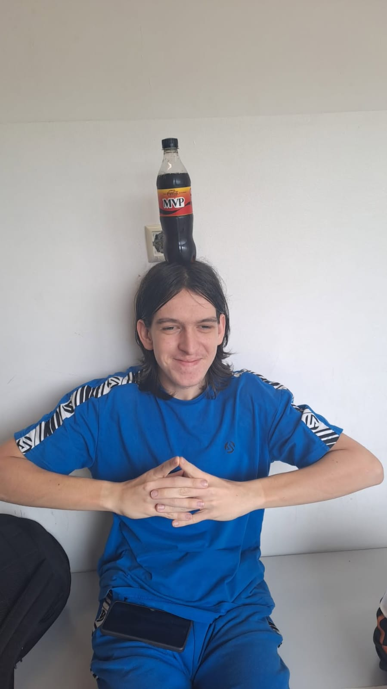 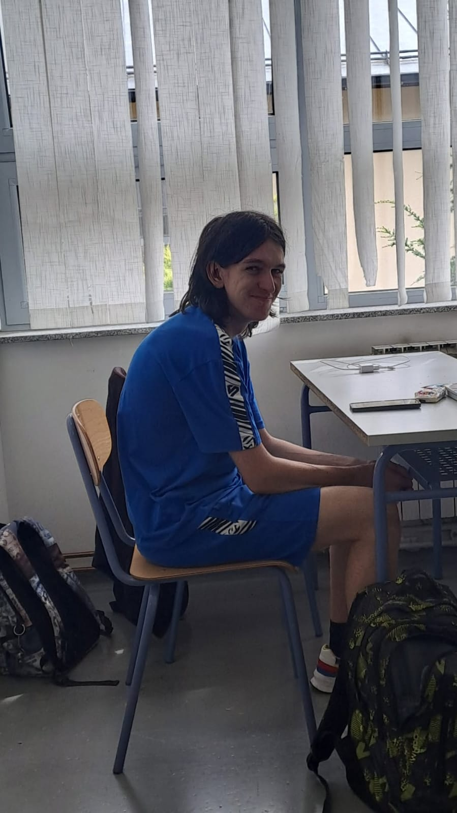 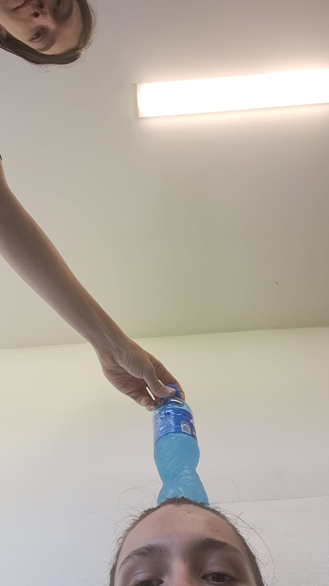 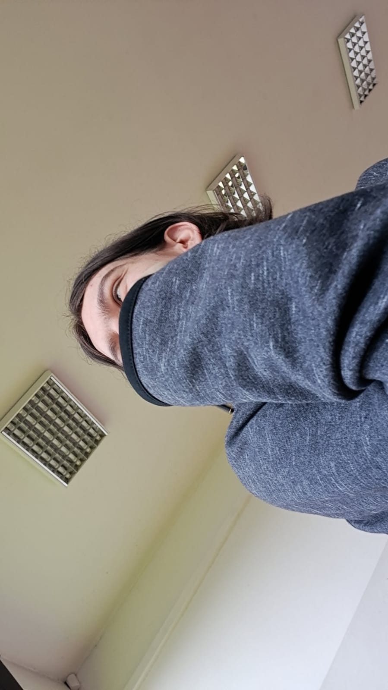 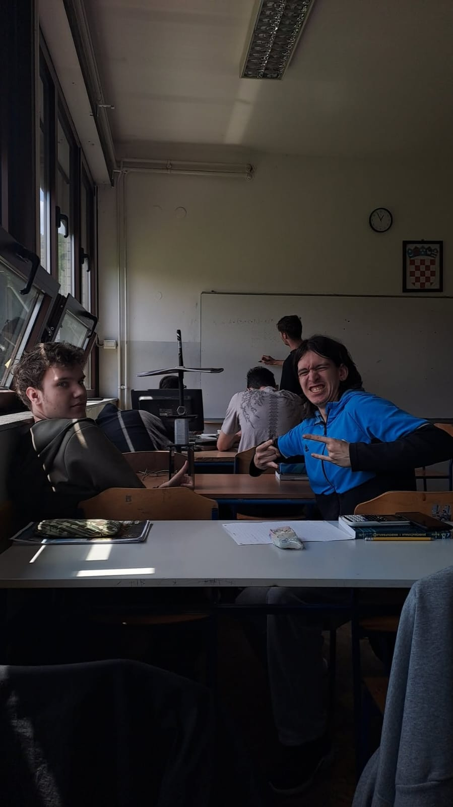 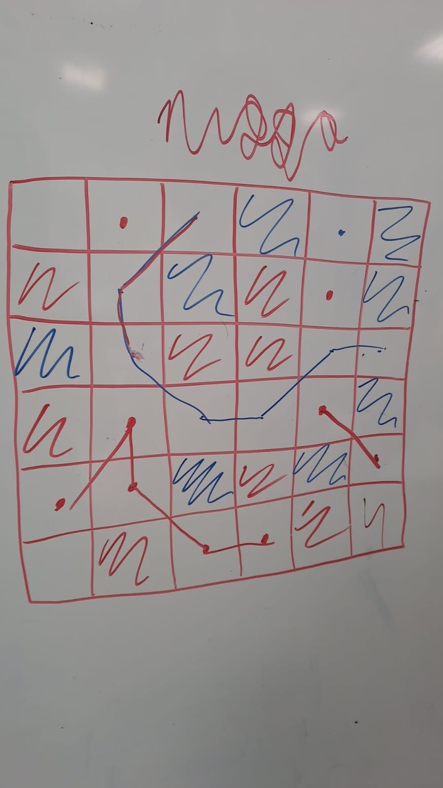 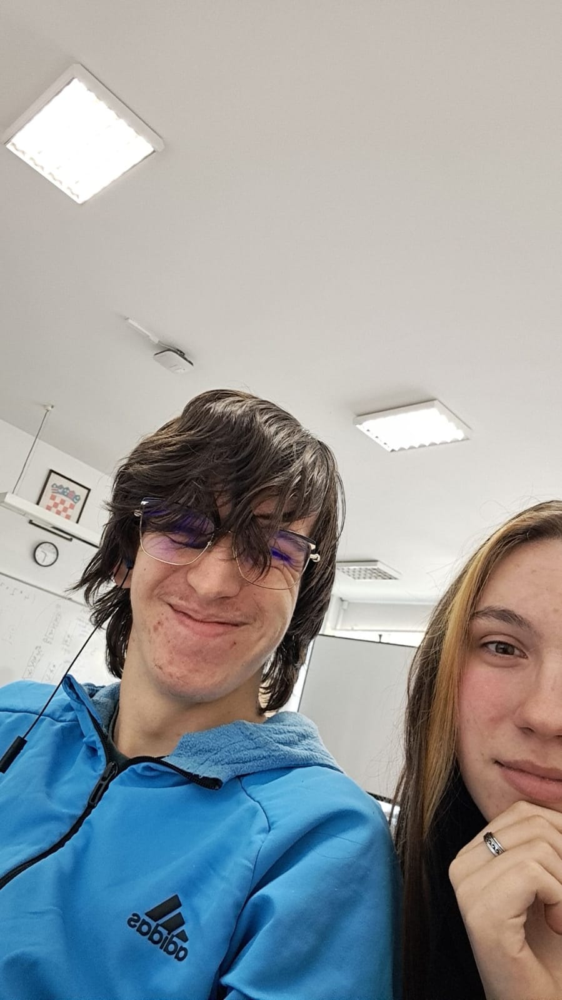
Znamo da nema puno teksta na glavnoj stranici no to je samo zato što smo to raspodijelili na različite podstranice i nismo htjeli izdati previše informacija kako bi ste mogli testirati svoje znanje bez velike pomoći stranice.
Nadamo se da vam se sviđa naš rad i da ćemo doiti dobru ocjenu. 😇